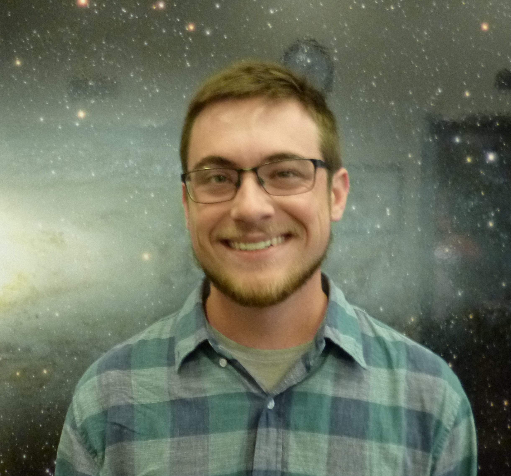

About Me
I'm a PhD student in Astronomy and Astrobiology at
the University of Washington. I have bachelor's degrees
in both physics and applied mathematics, with a minor in
computer science from Boise State University. I've been
tutoring since 2013. If you need help in Astronomy, Physics,
or Mathematics, please contact me to set up a tutoring session!
Below you'll find lists of the courses that I tutor from Seattle
Central Community College and The University of Washington. I'm
also able to tutor similar courses offered at other institutions,
as well as high school math and physics.

I'm happy to set up a recurring session, or to tutor you on an as-needed basis.
For inquiries, contact me at tagordon@uw.edu
Tutoring Philosophy
We all know that math and science concepts build on each other, and that if one doesn't build a
strong foundation as they move through a course or sequence of courses, it can become increasingly
difficult to keep up with the curriculum. This is why I believe that one of my most important jobs as
a tutor is to make sure that students are able to keep up and build those foundations as their course
progresses. The way in which I accomplish that goal depends to some extent on the learning style and
preferences of an individual student, but usually involves supervised problem solving. By working through
problems with my supervision, I can aid the student in identifying misunderstandings or common mistakes
before they become habit, and before they begin to interfere with the student's progress.
While I prefer to tutor students on a regular basis, because regular tutoring gives
the highest probability of success, I can also tutor on an as-needed basis to help
students prepare for tests or to review old material. As a long time student myself, I
also have a wealth of experience in test preparation to draw on, and can provide a
variety of study techniques and tips that I've found useful.
If you have any questions about my philosophy or technique, feel free to send me an email. I also strive
to be responsive to the needs of individual students, as every student learns and develops skills in a
unique way.
The University of Washington
Physics
- PHYS 107 Physics Concepts for Non-Scientists
- PHYS 114 General Physics
- PHYS 115 General Physics
- PHYS 116 General Physics
- PHYS 121 Mechanics
- PHYS 122 Electromagnetism
- PHYS 123 Waves
Math
- MATH 098 Intermediate Algebra
- MATH 100 Algebra
- MATH 102 Algebra
- MATH 103 Introduction to Elementary Functions
- MATH 111 Algebra with Applications
- MATH 112 Application of Calculus to Business and Economics
- MATH 120 Precalculus
- MATH 124 Calculus with Analytic Geometry I
- MATH 125 Calculus with Analytic Geometry II
- MATH 126 Calculus with Analytic Geometry III
- MATH 134 Accelerated [Honors] Calculus
- MATH 135 Accelerated [Honors] Calculus
- MATH 136 Accelerated [Honors] Calculus
- MATH 301 Elementary Number Theory
- MATH 307 Introduction to Differential Equations
- MATH 308 Matrix Algebra with Applications
- MATH 324 Advanced Multivariable Calculus I
- MATH 394 Probability I
If you need help with more advanced courses, or anything not on this list, let me know and I'll tell you if I can assist.
One hour session: $35
Two hour session: $60
I'm happy to negotiate pricing for students with limited means.